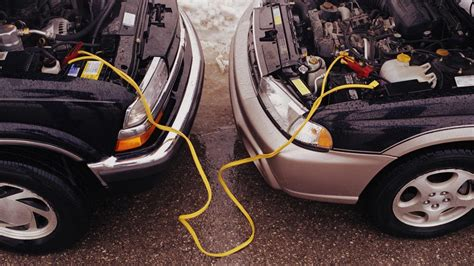

Lab 4 - Pseudocoding & Problem-solving
Challenge
Practice thinking in terms of pseudocoding before jumping straight into coding.
Problems
It took us a while to organize the high-level steps of our every day task (Jumpstarting a Car). We were a bit confused by the precode tag as well. However, other than that we didn't run into many problems!
Reflection
Overall, I have felt confident in my ability to complete the steps in this lab. My partner, Soriah, and I revisited past labs when we had small questions about standard things we know we had already done. We also used W3Schools to figure out how to use the precode tag.
Results
Jumpstarting a Car
- Gather materials
- Find a car with a charged battery
- Identify positive and negative terminals on both cars
- Connect jumper cables
- Start the working vehicle
- Attempt to start dead vehicle
- Remove jumper cables
- Let the dea vehicle run
//Hangman steps:
//Print board at the start of each turn
//Generate word before the user begins
//Accept user input
//Validate user move
//Validate user move
//Generate body part
//The player finishes the generated word
//Win
//Hangman is fully generated
//loss